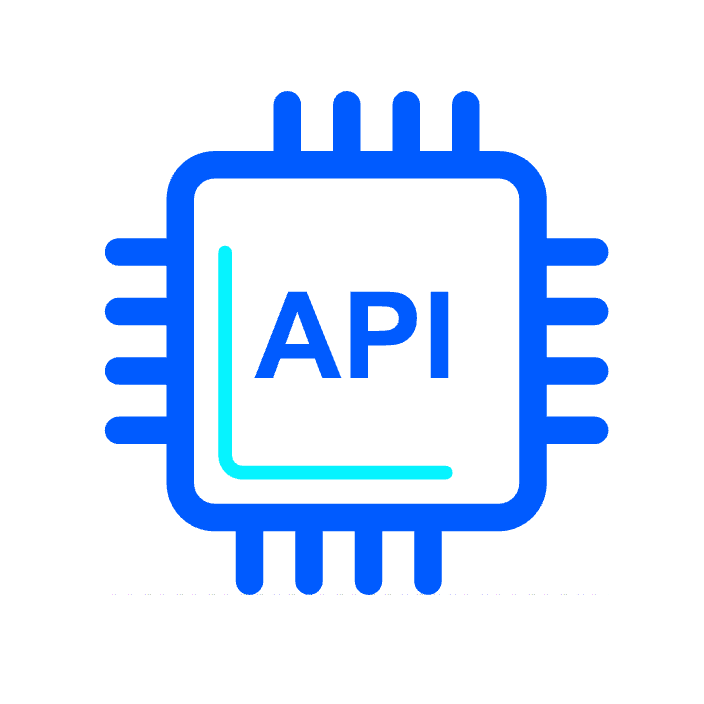

Tik-Down
Tiktok Downloader
Cepat & Aman
Tik-Down,sebuah platform downloader, membawa pengalaman unggul dengan kecepatan tinggi dan keamanan ekstra. Dengan Tik-Down, pengguna dapat dengan mudah mengunduh video TikTok tanpa watermark dalam sekejap, memastikan kualitas dan integritas video terjaga. Kecepatan tinggi menjadi fokus utama, memungkinkan pengguna menghemat waktu saat mendownload konten favorit mereka..
Tik-Down juga menempatkan keamanan sebagai prioritas utama. Dengan tidak menyimpan video secara lokal dan tidak menampilkan iklan yang mengganggu, Tik-Down memberikan lingkungan pengunduhan yang aman dan efisien. Dengan antarmuka yang sederhana dan mudah digunakan, Tik-Down menjadi solusi yang andal untuk mendapatkan video TikTok secara cepat.

Tik-Down
Si Paling Update
Tik-Down terus memberikan layanan terbaik dengan mengintegrasikan kode-kode terbaru, library paling mutakhir, dan framework masa kini dalam pengembangannya. Mengadopsi pendekatan ini memastikan bahwa platform ini tidak hanya mempertahankan kinerja optimal, tetapi juga dapat menyediakan fitur-fitur terbaru dan keamanan yang diperbarui.

Tik-Down
Si Paling Gesit
Tik-Down memanfaatkan API key yang powerful untuk memberikan pengguna pengalaman pengunduhan video TikTok yang optimal. Dengan kemampuan API key ini, Tik-Down dapat memberikan kecepatan dan efisiensi dalam pengambilan data, memastikan pengguna mendapatkan hasil yang diinginkan dengan cepat dan tanpa kendala.
Kami sangat aktif di media sosial dan berusaha untuk terus berinteraksi dengan pengguna dan pelanggan kami. Dengan hadir di platform seperti Facebook, Twitter, Instagram, dan YouTube, kami dapat memberikan informasi terbaru, menjawab pertanyaan, dan mendukung pelanggan melalui pesan pribadi atau komentar. Kami juga menggunakan media sosial sebagai saluran untuk mengiklankan produk dan layanan kami, serta berbagi berbagai konten menarik dan relevan.
Saya Tidak Berafiliasi Dengan Tiktok
Bytedance Atau Anak Perusahaan Mereka
Rektz-Tech™.All Rights Reserved.
Bytedance Atau Anak Perusahaan Mereka
Rektz-Tech™.All Rights Reserved.